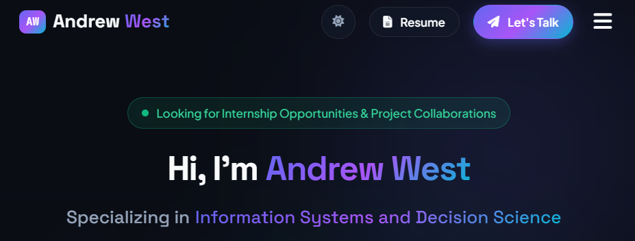

My Projects
A showcase of my technical and academic project work in Information Systems & Decision Sciences.

Personal Portfolio & Web Application
A modern portfolio web application engineered using an AI-assisted vibe coding procedure. Directed the development process through conversational prompting, iterative architecture design, and real-time evaluation. Integrated domain management via GoDaddy with Cloudflare for DNS routing, global CDN caching, and SSL/TLS security encryption.
Engineering Case Study
An end-to-end breakdown of the AI-assisted vibe coding procedure, rapid prototyping cycle, and production infrastructure deployment.
Conversational Prompt Engineering & System Blueprint
Rather than writing manual boilerplate, the engineering workflow began with structured natural language specifications. Detailed architectural guidelines were formulated to define component hierarchies, CSS variable token trees, color contrast standards, and responsive viewport breakpoints.